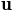
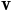

pylayers.util.cone¶
Class Cone¶
The following conventions are adopted
- A Cone has an apex which is a point in the plane.
- A cone has two vectors which define the cone aperture. Those two vectors can
always been distinguished as a starting vector (u) and a ending vector (v).
The cone region is defined by the convex angular sector going from starting vector  to ending vector  rotating in the plane in folllowing the trigonometric convention. The modulus of the cross product between and is positive.

Cone.__init__([a, b, apex]) |
a : np.array (,2) |
Cone.upd_angle() |
update cone angle attribute |
Cone.belong_seg(pta, phe[, prob]) |
test if segment belong to cone |
Cone.aboveseg() |
|
Cone.outside_point(p) |
check if p is outside cone |
Cone.belong_point2(p) |
|
Cone.belong_point(p) |
test if p belongs to Cone |
Cone.above(p) |
check if above |
Cone.fromptseg(pt, seg) |
creates a Cone from one point and one segment |
Cone.from2segs(seg0, seg1) |
creates a Cone from 2 segments |
Cone.from2csegs(seg0, seg1) |
creates a Cone from 2 connected segments |
Cone.show(**kwargs) |
show cone |